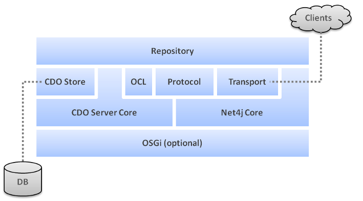

Server Architecture


Server Architecture |
|
A CDO server hosts one or more repositories. Each repository combines a generic CDO core with
a store and a protocol boundary; applications normally configure, observe, and customize the repository rather than
either boundary. The managed container supplies the factories and named elements that assemble those parts.
The diagram shows the architectural separation. It is deliberately not a deployment topology:

This guide uses normal API and intentional extension SPI. In particular, internal repository, session, commit-manager, protocol-indication, and store classes are implementation details and are not server application extension points.
| 1 | Repository Core | ||
| 2 | Store Boundary | ||
| 3 | Protocol and Transport Boundary | ||
| 4 | Container and Lifecycle | ||
A running repository owns the package registry, branch manager,
revision manager, commit-info manager,
session manager, and locking manager. These services expose the
state that applications can observe; repository handlers and protectors are the supported ways to influence work.
The following articles introduce startup, configuration, services, events, and handlers in that order.
IStore is the physical persistence boundary. Its capabilities determine whether a repository can offer
facilities such as auditing and branching. Choose and configure an existing store at the repository boundary; a
custom store and IStoreAccessor implementation are expert persistence SPI work, not normal server
application programming.
ISessionProtocol separates the CDO repository from wire communication. CDO's supplied server integration
uses Net4j acceptors and connectors: an acceptor receives client connections and an
connector carries the resulting protocol traffic. Server applications commonly configure an
acceptor through the container, but do not implement protocol indications.
The managed container locates factories and creates or retains named server elements.
In an OSGi server, bundle registration supplies much of that wiring. Standalone and embedded applications prepare
and populate a container explicitly. In both cases, activation and deactivation define component lifetime.
See Also: